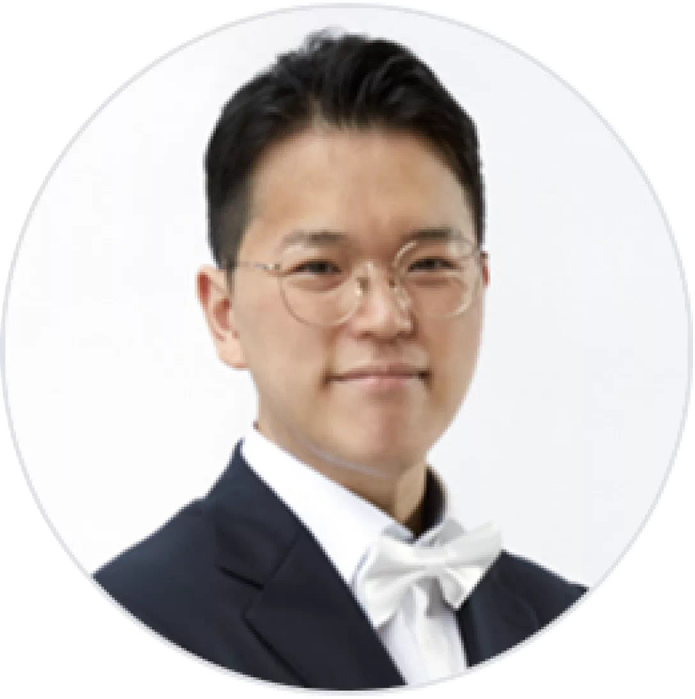

포럼 소개
이번 사이언스오픈이노베이션 포럼은 과학 데이터 기반의 혁신적인 연구를 지원하고 초학제적인 연구활동을 촉진하기 위해 신규 개설된 대학 부설 연구소 과학데이터 혁신연구소를 비롯하여 그린바이오, 유전공학, 융합과학기술, AI 분야에서 활발하게 활동하고 있는 서울대학교 교내 바이오 연구소의 핵심연구자를 모시고 각 연구소 소개 및 바이오 분야 최신 동향을 파악하고 다양한 혁신 주체간 협력을 통한 미래 발전방향을 모색하고자 합니다.
좌장강건욱 원장 |
|---|
Understanding evolution through the lens of genomic variation정충원 교수 |
Understanding Food Systems for Smart Food Processing정동화 부원장 |
|

T세포 휴지기전 연구황수석 교수 
|
초고분해능 형광 현미경 기술 및 응용김정민 교수 |
Synthesis prediction for small molecules using AI정유성 교수 |